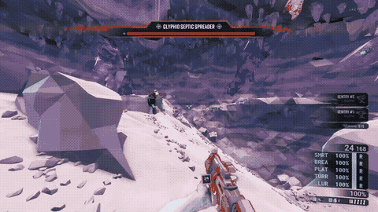

发射物 · Projectiles
Projectile 是敌人描述符中的一个可选字段，它允许你把远程敌人使用的发射物替换为游戏中的任意其他发射物，例如，下面的代码片段会让一个脓毒异虫发射钻机的雪球：
英文原文
Projectile is an optional field in enemy descriptors. It allows changing the projectiles of ranged enemies to any other projectile in the game. As an example, the following snippet produces a septic that throws driller's snowball:
"ED_Ice_Septic": {
"Base": "ED_Spider_Lobber",
"Projectile": "PRJ_Crye_SnowBall_C"
}
- 这个功能不需要
Enemies，你可以使用EnemiesNoSync，这样即使没有安装 CD2 的客机也可以看到新的发射物。英文原文
This feature doesn't requireEnemiesand can useEnemiesNoSyncinstead so clients without CD2 can still see the changed projectiles.
- 发射物名称可以省略末尾的 “_C”。
英文原文
The name of the projectile can omit the "_C" at the end.
- CD2 会扫描游戏文件中的发射物，所以模组作者可以自行添加新的发射物。在下面的列表之中，还有 MEV 与 DEA 两个模组 添加的发射物，这两个都是为游戏添加新敌人的常见模组。
英文原文
CD2 scans the game files for the projectiles so modders can add new ones themselves. Below the following list there is a section with the projectiles added by MEV and DEA, two common mods that add new enemies to the game.
Projectile字段是可以被 Mutator 控制的。英文原文
TheProjectilefield can be mutated.
游戏内置的发射物列表 · List of game projectiles
此外请参阅由 @Carrot 编写的电子表格，其中提供了更详细的分类方式，包括发射物的类别、伤害与类型。
英文原文
See also this spreadsheet compiled by @Carrot which adds a lot more detail to the following list, dividing the projectiles according to their categories, damage and type.
- "BP_BoscoAbillityProjectile_C"Bosco
- "BP_Bosco_FoamGlob_C"Bosco
- "BP_Bosco_Rocket_Frag_C"Bosco
- "BP_Bosco_Rocket_Ice_C"Bosco
- "BP_CameraDrone_FlareProjectile_C"侦察照明弹
- "BP_ClusterFragment_MicroMissileLauncher_C"枪手集术轰炸
- "BP_FoamRocket_C"泡沫枪？
- "BP_MicroRocket_Base_C"枪手
- "BP_MicroRocket_HE_C"Bosco？
- "PRJ_AcidDrop_C"轰炸蝇
- "PRJ_AcidDrop_Ice_C"冰霜轰炸蝇
- "PRJ_BaseBigGooProjectile_C"钻机泥枪
- "PRJ_BaseGooProjectile_C"钻机泥枪
- "PRJ_BaseNormalGooProjectile_C"钻机泥枪
- "PRJ_Base_Spider_Lobber_Projectile_C"脓毒异虫
- "PRJ_BigGooProjectile_C"钻机泥枪
- "PRJ_BigGooProjectile_Trail_C"钻机泥枪
- "PRJ_BigGoo_Buckshot_C"钻机泥枪
- "PRJ_BombSpitter_C"???
- "PRJ_BomberGoo_C"轰炸蝇
- "PRJ_BomberIce_C"冰霜轰炸蝇
- "PRJ_Bomber_Fire_C"火焰轰炸蝇
- "PRJ_Boss_Twin_Stomp_C"重斧
- "PRJ_BreederEgg_C"水母
- "PRJ_CactusSpike_C"仙人掌？
- "PRJ_CaretakerBarrier_C"看守者-屏障
- "PRJ_ChargedBlasterShot_C"钻机离子枪
- "PRJ_Crawler_DeathProjectile2_C"亚空间猴子
- "PRJ_Crossbow_ChemicalExplosionProjecitle_C"侦察化学弩
- "PRJ_Crossbow_FireProjectile_C"侦察火弩
- "PRJ_Crossbow_IceProjectile_C"侦察冰弩
- "PRJ_Crossbow_PheromoneProjectile_C"侦察信息素弩
- "PRJ_Crossbow_Projectile_C"侦察弩箭
- "PRJ_Crossbow_TaserProjectile_C"侦察电击弩
- "PRJ_Crye_SnowBall_C"钻机雪球
- "PRJ_Cryocannon_C"钻机冰锥
- "PRJ_DrippingPlant_C"无效
- "PRJ_ExploderTankClusterBomb_C"大自爆爆炸的球
- "PRJ_ExplosiveBombDrop_C"爆炸轰炸蝇
- "PRJ_FacilityTentacleProjectile_C"看守者触手
- "PRJ_FacilityTurretLaser_Sniper_C"狙击炮台
- "PRJ_Facility_Barrier_Base_C"推斥炮塔
- "PRJ_Facility_Laser_Base_C"巡逻机器人？
- "PRJ_FacilityturretLaser_Burst_C"连射炮塔
- "PRJ_FlameWall_C"灼热浪潮
- "PRJ_FlareGun_Projectile01_C"侦察照明弹
- "PRJ_FlyingSmartRock_C"飞石
- "PRJ_Foam_C"
- "PRJ_FriendlyInfectedMuleGrenade_C"Bet-C
- "PRJ_GooProjectile_Fragment_Base_C"轰炸蝇？
- "PRJ_GooProjectile_Fragment_GooBomoberSpecial_C"轰炸蝇？
- "PRJ_GooProjectile_Fragment_Normal_C"轰炸蝇？
- "PRJ_GrenadeAxe_C"钻机斧头
- "PRJ_GrenadeLauncher_C"钻机高爆手雷
- "PRJ_Grenade_HackeShredder_C"工程蜂群手雷
- "PRJ_Grenade_StickySmall_C"枪手粘性手雷
- "PRJ_GuntowerLineProjectile_C"除虫器-底层激光
- "PRJ_HomingDrone_C"除虫器无人机
- "PRJ_HydraWeedSpawn_C"生成新芽/治愈果实（无效）
- "PRJ_HydraWeedSpawn_HealingPod_C"王草-治愈
- "PRJ_HydraWeed_Shooter_C"王草-新芽
- "PRJ_InfectedMuleGrenade_C"Bet-C
- "PRJ_LargeStabbyThorn_C"树洞扎人植物
- "PRJ_LineCutter2_C"工程等离子切割器
- "PRJ_Mactera_Shooter_C"异虫蝇
- "PRJ_Mactera_Shooter_Elite_C"精英异虫蝇
- "PRJ_MicroMissile_Buck_C"枪手
- "PRJ_MicroMissile_C"枪手
- "PRJ_MicroMissile_Cluster_C"枪手
- "PRJ_MicroMissile_Dumbfire_C"枪手
- "PRJ_MicroMissile_Mine_Head_C"枪手
- "PRJ_MicroMissile_PlasmaBurster_C"枪手贯穿
- "PRJ_Mortar_Autocannon_C"枪手迫击炮模组
- "PRJ_NormalBlasterShot_C"钻机离子枪
- "PRJ_NormalGooProjectile_C"
- "PRJ_OmmoranEnergySprite_C"心石
- "PRJ_PatrolBotLaser_Flying_C"巡逻机器人
- "PRJ_PatrolBotLaser_Flying_Hacked_C"巡逻机器人-友方
- "PRJ_PatrolBotLaser_Hacked_C"巡逻机器人-友方
- "PRJ_PatrolBotLaser_New_C"巡逻机器人
- "PRJ_PatrolBotRocket_C"巡逻机器人
- "PRJ_PlasmaCarbineShot_Big_C"侦察卡宾枪-秒杀
- "PRJ_PlasmaCarbineShot_C"侦察卡宾枪
- "PRJ_PlatformMaker_C"工程平台枪
- "PRJ_PowerupSphere_C"重击加速冷却的那个东西
- "PRJ_ProjectileBarf_C"岩痘腐化者
- "PRJ_RedThorn_C"地形的刺？
- "PRJ_RockpoxBomber_PlagueDrop_C"岩痘轰炸蝇
- "PRJ_Rockpox_Breede_VomitedLarva_C"生 1 个岩痘幼虫
- "PRJ_Rockpox_Breeder_WormVomit_C"生 2 个岩痘幼虫
- "PRJ_Rockpox_PlagueGlob_C"岩痘
- "PRJ_Rockpox_PlagueGlob_PlagueShark_C"岩痘幼虫
- "PRJ_SentryOvercharge_Projectile_C"工程炮台-鞭策
- "PRJ_ShootingPlant_C"吐珠
- "PRJ_Spider_Boss_Heavy_C"巢主
- "PRJ_Spider_Boss_Heavy_FireballBallistics_C"巢主
- "PRJ_Spider_Boss_Twin_Mine_C"双子
- "PRJ_Spider_Boss_Twin_Multifireball_C"双子
- "PRJ_Spider_Lobber_Projectile_C"脓毒异虫
- "PRJ_Spider_Lobber_Projectile_Fragment_C"脓毒异虫
- "PRJ_Spider_RapidShooter_C"速射
- "PRJ_Spider_Shooter_C"吐酸
- "PRJ_Spider_Shooter_Ground_C"迫击吐酸
- "PRJ_Spider_Shooter_Queen_C"酸液皇后
- "PRJ_Spider_Shooter_Rockpox_Plague_C"岩痘吐酸
- "PRJ_Spider_Spitter_C"吐丝
- "PRJ_Spider_Tank_Boss_C"巢主
- "PRJ_Spider_Tank_Boss_Eggshot_C"无畏红蜂拥球
- "PRJ_StaticBomber_C"马桶
- "PRJ_TentaclePlant_New_C"小王草
- "PRJ_Terminator_Barrier_C"娃娃机
- "PRJ_TripleShooter_C"三鄂
- "PRJ_Turret_Barrier_C"推斥炮台
- "PRJ_WoodlouseAttack_C"大运
MEV 发射物列表 · List of MEV projectiles
要使用这些发射物，你需要安装 MEV 模组。
英文原文
To make use of these you will need to have MEV installed.
- "PRJ_ExploderTankClusterBomb_Quacke_C"
- "PRJ_FacilityTurretLaser_Sniper_Slow_C"
- "PRJ_GrenadeLauncher_Hyper_C"
- "PRJ_HydraWeed_Shooter_STE_C"
- "PRJ_HydraWeed_Shooter_STE_web_C"
- "PRJ_HydraWeed_Shooter_Sound_C"
- "PRJ_HydraWeed_Shooter_Sound_Web_C"
- "PRJ_Hyper2_C"
- "PRJ_Mactera_Shooter_electric_C"
- "PRJ_Mactera_Shooter_fire_C"
- "PRJ_Mactera_Shooter_ice_C"
- "PRJ_Mactera_Shooter_poison_C"
- "PRJ_PatrolBotRocket_fast_C"
- "PRJ_PatrolBotRocket_slow_C"
- "PRJ_Roll2_C"
- "PRJ_Roll_C"
- "PRJ_Spawn_Enemy_C"
- "PRJ_Spider_RapidShooter_Turbo_C"
- "PRJ_Spider_RapidShooter_electric_C"
- "PRJ_Spider_RapidShooter_fire_C"
- "PRJ_Spider_RapidShooter_ice_C"
- "PRJ_Spider_RapidShooter_poison_C"
- "PRJ_SpitballerNukeEX_C"
- "PRJ_SpitballerNuke_C"
- "PRJ_TripleShooter_electric_C"
- "PRJ_TripleShooter_fire_C"
- "PRJ_TripleShooter_ice_C"
- "PRJ_TripleShooter_poison_C"
- "PRJ_WoodlouseAttack_electric_C"
- "PRJ_WoodlouseAttack_fire_C"
- "PRJ_WoodlouseAttack_ice_C"
- "PRJ_WoodlouseAttack_poison_C"
DEA 发射物列表 · List of DEA projectiles
要使用这些发射物，你需要安装 DEA 模组。本部分包含模组作者 @donnie_danko 的部分注释。
英文原文
To make use of these you will need to have DEA installed. Comments by mod author @donnie_danko.
| Name | Comment |
|---|---|
| PRJ_AcidBomber_Drop | |
| PRJ_AcidBomber_Shot | |
| PRJ_Exploder_SpawnShot | Used by Bomber_Exploder |
| PRJ_Exploder_SpawnShot_Baller | Used by ShootingPlant_Spawner_Boomer |
| PRJ_Fanatic_Fireball | All variants |
| PRJ_Ice_Shooter | |
| PRJ_Mactera_Breach | Used by Mactera_Brendle and Mactera_Brooter |
| PRJ_Nukebomber_Bomb 核弹 |
|
| PRJ_Nukebomber_Shot 核弹 |
|
| PRJ_PheroShot and PRJ_SpawnDrop | Used by Parabomber |
| PRJ_RJ_Lobber | |
| PRJ_Sniper_Turret_Slow | |
| PRJ_Spawninator_One_Meatball | |
| PRJ_Spawninator_Two_Meatball | |
| PRJ_Spawnshot | Used by _Slobber and _Shooter_Spawner |
| PRJ_SpawnshotEX | Used by Fauxnought and ShootingPlant_SpawnerEX |
| PRJ_Spawnshot_Dense | Used by _SlobberEX, _Shooter_SpawnerEX, and ShootingPlant_Spawner |
| PRJ_Spider_Shooter | Ceiling grooter |
| PRJ_Spider_Shooter_Ground | Grooter and wall variant |
| PRJ_Spider_Spitter | Gritters |
| PRJ_Spider_Spitter_Cyan | |
| PRJ_Spider_Spitter_Pink | STE_MarkedForDeath_Spitter |
| PRJ_Spider_Spitter_Stagger | |
| PRJ_Spider_Spitter_White | |
| PRJ_Spider_Tank_Boss | Used by Shooter_Fire |
EEE 追加发射物列表 · List of EEE projectiles
该资源由 EEE 模组作者 @math.h 维护。
英文原文
See this resource maintained by @math.h, the creator of EEE.